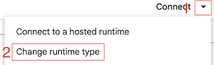

Hyperparameter Tuning with Optuna#

Note: this notebook requires a GPU. Please switch to T4 GPU using the drop down menu in the top right of the colab interface:

Tune learning rate, weight decay, and channels on a toy training loop#
Install and import dependencies#
# Dependency management
import sys, subprocess
for p in ['optuna', 'plotly', 'scikit-learn', 'torch']:
try:
__import__(p if p != 'scikit-learn' else 'sklearn')
except Exception:
subprocess.check_call([sys.executable, '-m', 'pip', 'install', p, '-q'])
import optuna
import torch, torch.nn as nn, torch.optim as optim
from pathlib import Path
# fix random seeds for reproducibility
torch.random.manual_seed(0)
# set device
device = "cuda" if torch.cuda.is_available() else "cpu"
device = "mps" if torch.backends.mps.is_available() else device ## Mac OS metal
print(f"Using device: {device}")
Using device: mps
Data Model and Loss function#
We define some toy data, a simple model and loss function. Which we can then optimize.
# Data
X = torch.randn(64,1,16,16)
y = torch.randn(64,1,16,16)
# Model
class Tiny(nn.Module):
def __init__(self, ch=8):
super().__init__()
self.net = nn.Sequential(nn.Conv2d(1,ch,3,padding=1), nn.ReLU(), nn.Conv2d(ch,1,3,padding=1))
def forward(self,x): return self.net(x)
# Loss
criterion = nn.MSELoss()
Define the objective function#
We define an objective function. Optuna will optimize its return value. The function takes a trial object as input, which is used to suggest hyperparameters. In this example, we will tune the learning rate, weight decay, and number of channels in a simple neural network.
def objective(trial):
lr = trial.suggest_float('lr', 1e-4, 1e-2, log=True)
wd = trial.suggest_float('weight_decay', 0.0, 1e-3)
ch = trial.suggest_categorical('channels', [4,8,16,32])
model = Tiny(ch)
opt = optim.Adam(model.parameters(), lr=lr, weight_decay=wd)
for _ in range(10):
opt.zero_grad(); loss = criterion(model(X), y); loss.backward(); opt.step()
return float(loss)
Create a study#
Here we create a study object, which will manage the optimization process. We specify that we want to minimize the objective function.
By saving the study to a SQLite database, we can easily resume the optimization process later if needed. Thereby, we can add more trials without losing previous results, which means our new trials will be run with hyperparameters closer to the optimum.
By setting the direction to “minimize”, we indicate that we want to find the hyperparameters that result in the lowest value of the objective function.
study_name = "tiny_optuna_study"
db_path = Path('data') / f"{study_name}.db"
db_path.parent.mkdir(parents=True, exist_ok=True)
study = optuna.create_study(
direction="minimize", study_name=study_name, storage=f"sqlite:///{db_path}", load_if_exists=True
)
[I 2025-09-17 12:24:15,255] Using an existing study with name 'tiny_optuna_study' instead of creating a new one.
Optimize the study#
This will run the optimization process for a specified number of trials. Each trial will call the objective function with different hyperparameters suggested by Optuna.
Optuna will keep track of the results and will choose hyperparameters close to the best hyperparameters found so far. Thereby, we do a form of gradient descent in hyperparameter space.
study.optimize(objective, n_trials=30)
print('Best:', study.best_params)
/var/folders/8s/7jr95f1d28vflnwm1cfqv7t40000gr/T/ipykernel_8995/2863418574.py:10: UserWarning: Converting a tensor with requires_grad=True to a scalar may lead to unexpected behavior.
Consider using tensor.detach() first. (Triggered internally at /Users/runner/work/pytorch/pytorch/pytorch/torch/csrc/autograd/generated/python_variable_methods.cpp:836.)
return float(loss)
[I 2025-09-17 11:12:57,778] Trial 30 finished with value: 1.0118509531021118 and parameters: {'lr': 0.007077761198021904, 'weight_decay': 0.00022229522008306978, 'channels': 4}. Best is trial 25 with value: 0.9992284774780273.
[I 2025-09-17 11:12:57,857] Trial 31 finished with value: 1.000373125076294 and parameters: {'lr': 0.009118217839010612, 'weight_decay': 0.0007437894921972981, 'channels': 4}. Best is trial 25 with value: 0.9992284774780273.
[I 2025-09-17 11:12:57,929] Trial 32 finished with value: 1.008986473083496 and parameters: {'lr': 0.007252798162024875, 'weight_decay': 0.0007407579168992411, 'channels': 4}. Best is trial 25 with value: 0.9992284774780273.
[I 2025-09-17 11:12:58,003] Trial 33 finished with value: 1.002610206604004 and parameters: {'lr': 0.0049561667159070295, 'weight_decay': 0.00048185411311544587, 'channels': 4}. Best is trial 25 with value: 0.9992284774780273.
[I 2025-09-17 11:12:58,079] Trial 34 finished with value: 0.9979422092437744 and parameters: {'lr': 0.009672107938551474, 'weight_decay': 0.0009679718257625151, 'channels': 4}. Best is trial 34 with value: 0.9979422092437744.
[I 2025-09-17 11:12:58,147] Trial 35 finished with value: 1.0174627304077148 and parameters: {'lr': 0.0004391261756050127, 'weight_decay': 0.0009374192916886558, 'channels': 4}. Best is trial 34 with value: 0.9979422092437744.
[I 2025-09-17 11:12:58,324] Trial 36 finished with value: 1.0127384662628174 and parameters: {'lr': 0.006413871970844018, 'weight_decay': 0.0009969683805865694, 'channels': 32}. Best is trial 34 with value: 0.9979422092437744.
[I 2025-09-17 11:12:58,393] Trial 37 finished with value: 1.01931631565094 and parameters: {'lr': 0.004107328210014978, 'weight_decay': 0.0004455661976358142, 'channels': 4}. Best is trial 34 with value: 0.9979422092437744.
[I 2025-09-17 11:12:58,475] Trial 38 finished with value: 1.0294582843780518 and parameters: {'lr': 0.003039347553112922, 'weight_decay': 0.00040796045578020786, 'channels': 8}. Best is trial 34 with value: 0.9979422092437744.
[I 2025-09-17 11:12:58,590] Trial 39 finished with value: 1.0224741697311401 and parameters: {'lr': 0.001381975549711861, 'weight_decay': 0.00018853378199656446, 'channels': 16}. Best is trial 34 with value: 0.9979422092437744.
[I 2025-09-17 11:12:58,657] Trial 40 finished with value: 1.0093765258789062 and parameters: {'lr': 0.007667944456947918, 'weight_decay': 7.826758980684785e-05, 'channels': 4}. Best is trial 34 with value: 0.9979422092437744.
[I 2025-09-17 11:12:58,725] Trial 41 finished with value: 0.9964410662651062 and parameters: {'lr': 0.009978074702988046, 'weight_decay': 0.0007335612785609747, 'channels': 4}. Best is trial 41 with value: 0.9964410662651062.
[I 2025-09-17 11:12:58,794] Trial 42 finished with value: 1.0364718437194824 and parameters: {'lr': 0.00010369621443549447, 'weight_decay': 0.0008549893091700598, 'channels': 4}. Best is trial 41 with value: 0.9964410662651062.
[I 2025-09-17 11:12:58,862] Trial 43 finished with value: 0.9979429244995117 and parameters: {'lr': 0.009987068388176857, 'weight_decay': 0.000269397084178768, 'channels': 4}. Best is trial 41 with value: 0.9964410662651062.
[I 2025-09-17 11:12:58,954] Trial 44 finished with value: 1.000487208366394 and parameters: {'lr': 0.009612102156584236, 'weight_decay': 0.0005392047959575771, 'channels': 4}. Best is trial 41 with value: 0.9964410662651062.
[I 2025-09-17 11:12:59,023] Trial 45 finished with value: 0.9995326995849609 and parameters: {'lr': 0.005657899801025722, 'weight_decay': 0.0002867179293019638, 'channels': 4}. Best is trial 41 with value: 0.9964410662651062.
[I 2025-09-17 11:12:59,105] Trial 46 finished with value: 1.003088116645813 and parameters: {'lr': 0.005536525428952835, 'weight_decay': 0.00030518517741736186, 'channels': 8}. Best is trial 41 with value: 0.9964410662651062.
[I 2025-09-17 11:12:59,274] Trial 47 finished with value: 1.000117540359497 and parameters: {'lr': 0.005780832624197239, 'weight_decay': 0.00026729737434930275, 'channels': 32}. Best is trial 41 with value: 0.9964410662651062.
[I 2025-09-17 11:12:59,343] Trial 48 finished with value: 1.0051277875900269 and parameters: {'lr': 0.0077735182673779255, 'weight_decay': 0.00043363502777963, 'channels': 4}. Best is trial 41 with value: 0.9964410662651062.
[I 2025-09-17 11:12:59,410] Trial 49 finished with value: 1.0133004188537598 and parameters: {'lr': 0.004835848838219171, 'weight_decay': 0.0002627671487992481, 'channels': 4}. Best is trial 41 with value: 0.9964410662651062.
[I 2025-09-17 11:12:59,477] Trial 50 finished with value: 1.0165175199508667 and parameters: {'lr': 0.00365954931605245, 'weight_decay': 0.0009141574683566872, 'channels': 4}. Best is trial 41 with value: 0.9964410662651062.
[I 2025-09-17 11:12:59,545] Trial 51 finished with value: 1.0193841457366943 and parameters: {'lr': 0.008161800409652862, 'weight_decay': 0.0003550950276124476, 'channels': 4}. Best is trial 41 with value: 0.9964410662651062.
[I 2025-09-17 11:12:59,612] Trial 52 finished with value: 1.0006392002105713 and parameters: {'lr': 0.006440552830283267, 'weight_decay': 0.00015665333393843336, 'channels': 4}. Best is trial 41 with value: 0.9964410662651062.
[I 2025-09-17 11:12:59,680] Trial 53 finished with value: 0.9959361553192139 and parameters: {'lr': 0.008417506944020166, 'weight_decay': 0.0007712522755467814, 'channels': 4}. Best is trial 53 with value: 0.9959361553192139.
[I 2025-09-17 11:12:59,747] Trial 54 finished with value: 1.0000667572021484 and parameters: {'lr': 0.009736851238571648, 'weight_decay': 0.0008133974275939808, 'channels': 4}. Best is trial 53 with value: 0.9959361553192139.
[I 2025-09-17 11:12:59,814] Trial 55 finished with value: 1.0196034908294678 and parameters: {'lr': 0.006360818300539465, 'weight_decay': 0.0007776075424304425, 'channels': 4}. Best is trial 53 with value: 0.9959361553192139.
[I 2025-09-17 11:12:59,928] Trial 56 finished with value: 1.0032978057861328 and parameters: {'lr': 0.008142963373842075, 'weight_decay': 0.0006757178747308983, 'channels': 16}. Best is trial 53 with value: 0.9959361553192139.
[I 2025-09-17 11:12:59,997] Trial 57 finished with value: 1.0212695598602295 and parameters: {'lr': 0.00526642834343851, 'weight_decay': 0.00099181382157683, 'channels': 4}. Best is trial 53 with value: 0.9959361553192139.
[I 2025-09-17 11:13:00,066] Trial 58 finished with value: 1.0039217472076416 and parameters: {'lr': 0.008298019446687746, 'weight_decay': 0.0008762498347119773, 'channels': 4}. Best is trial 53 with value: 0.9959361553192139.
[I 2025-09-17 11:13:00,147] Trial 59 finished with value: 1.0083703994750977 and parameters: {'lr': 0.0028490315509110357, 'weight_decay': 0.00039971016547720557, 'channels': 8}. Best is trial 53 with value: 0.9959361553192139.
Best: {'lr': 0.008417506944020166, 'weight_decay': 0.0007712522755467814, 'channels': 4}
Evaluate and visualize the results#
After the optimization is complete, we can evaluate and visualize the results using optuna.visualization module. Here are some common visualizations:
Plot optimization history#
From the history plot, we can see how the objective value (e.g., validation loss) changes over the trials. This helps us understand the convergence behavior of the optimization process. We clearly see that the objective value decreases over time, indicating that the optimization is effectively finding better hyperparameters.
fig = optuna.visualization.plot_optimization_history(study)
fig.show()
Hyperparameter importance#
The hyperparameter importance plot shows the relative importance of each hyperparameter in determining the objective value. This can help us identify which hyperparameters have the most significant impact on model performance. In this case, we can see that the learning rate has the highest importance, followed by number of channels and weight decay.
fig = optuna.visualization.plot_param_importances(study)
fig.show()
Parallel coordinate plot#
The parallel coordinate plot visualizes the relationship between hyperparameters and the objective value. Each line represents a trial, and we can see how different hyperparameter values correspond to different objective values. This can help us identify patterns and interactions between hyperparameters. For example, we can see that lower learning rates tend to result in lower objective values, especially when combined with higher number of channels.
Darker lines indicate better performance (in our case lower objective values).
fig = optuna.visualization.plot_parallel_coordinate(study)
fig.show()
Slice plot#
The slice plot shows the distribution of objective values for each hyperparameter. This can help us understand how sensitive the objective value is to changes in each hyperparameter. For example, we can see that the learning rate has a wide range of objective values, indicating that it is a sensitive hyperparameter. In contrast, weight decay has a narrower range of objective values, suggesting that it is less sensitive.
Also, this helps to identify good ranges for hyperparameters. For example, we can see that the best learning rates are close to our limit of 0.01. This means, we should probably increase the upper limit and run some more trials.
fig = optuna.visualization.plot_slice(study)
fig.show()
Summary#
With optuna, we have a powerful and flexible tool for hyperparameter optimization. By defining an objective function and using various visualization techniques, we can effectively tune our models to achieve better performance.
The hardest part usually is to adapt your model to change its architecture based on the hyperparameters suggested by optuna. But once that is done, you can easily run many trials and find good hyperparameters.
Exercise#
Use optuna to optimize the U-Net in the U-Net notebook.
Do not forget to add the dependencies and then restart the notebook.
Note: you need to shut down the kernel of this notebook before running the U-Net notebook, otherwise google colab will complain about too many open sessions.
Challenge#
Can you beat the best manual tuning?
Which team gets the best test score using optuna?